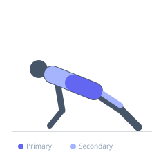
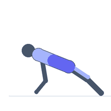

Exercise guide / Dragon Flag
Dragon Flag
The dragon flag is an expert-level isometric and dynamic core exercise popularized by Bruce Lee, performed supine on a bench. The athlete grips the bench behind the head, then raises the entire body from shoulders to feet in one rigid plank-like unit using only the upper back as the pivot point. The exercise demands extraordinary anterior chain strength throughout its full range of motion, particularly of the rectus abdominis, and serves as one of the most demanding bodyweight core exercises.
Primary muscles
rectus abdominis
transverse abdominis
Secondary muscles
latissimus dorsi
iliacus
psoas major
internal oblique
external oblique
Stabilizers
erector spinae
gluteus maximus
Equipment
Flat Bench


Starting position
- Lie on a flat bench with your head near one end. Reach back and grip the sides of the bench at head level with both hands.
Setup
- Use a sturdy flat bench that is bolted or stable. The bench must be able to support the twisting forces generated during this exercise.
Steps
- Step 1: Lie supine on the bench, gripping the sides firmly behind your head.
- Step 2: Press through the elbows and upper back to create a stable base.
- Step 3: Brace the entire core and raise your legs, hips, and lower back off the bench until your body is vertical or near-vertical.
- Step 4: Lower your body as a single rigid unit — do not let the hips break or the lower back sag.
- Step 5: Control the descent to just above the bench, then raise again or hold the lowered position isometrically.
Coaching cues
- One rigid line from shoulders to toes
- Never let your hips break — plank the whole way
- Fight gravity with your whole body
Breathing
- Exhale sharply as you raise. Breathe shallowly and brace continuously during any isometric hold.
Range of motion
- The body raises from horizontal to near-vertical. Control is more important than range — lower only as far as a rigid plank position can be maintained.
Tempo
- 3–5 second eccentric (lowering), 1 second pause at bottom, explosive concentric. Can also be performed as a static hold at various angles.
Common mistakes
- Breaking at the hips — allowing the lower back to sag instead of maintaining a rigid plank
- Attempting the exercise without adequate core strength prerequisites
- Using momentum to swing the legs rather than controlling the movement
Safety
- This is an expert exercise. Train hollow holds, L-sits, and hanging leg raises to mastery before attempting.
- Never allow the lower back to hyperextend under load — lower the legs only as far as core rigidity can be maintained.
- Use a stable, anchored bench.
Training
- strength: 3–8 reps
- strength: 3–5 sets
- Rest: {'strength': 180}